TrueTrade Overview
Main Data builder window:
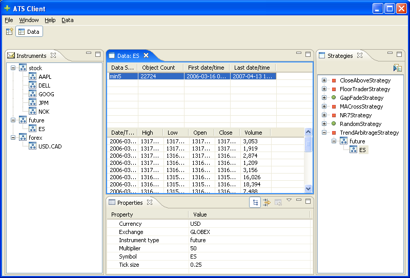
Clockwise from upper-left, the views are:
- Instrument View: displays a list of all of the stocks,
futures, and forex instruments which have been defined
- Available Data View: for the selected instrument, the upper
table displays a summary of all of the data series which have been
imported. The lower table shows snippets of the data for the
selected series.
- Strategies View: displays all of the strategies which have
been configured, and all of the instruments which will be used in
backtesting and in runtime mode. Strategies with a green dot will
be run in the runtime mode. By clicking the “Run Strategy”
button at the top of the view, the backtest simulator will be
executed
- Properties View: for the currently selected strategy or
instrument, displays all of the configured properties and allows
users to change them after addition.
To add new instruments, right-click on the “Instrument pane
> Add Instrument...” which will bring up the new instrument
dialog. This allows users to enter all of the data needed to
download data, run tests and run in live mode:
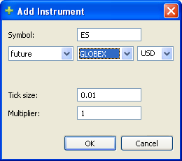
Once an instrument has been added, you can download data from
Yahoo, OpenTick or InteractiveBrokers using a wizard. You can also
use the Import Data wizard to import from a file:
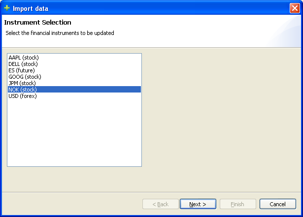
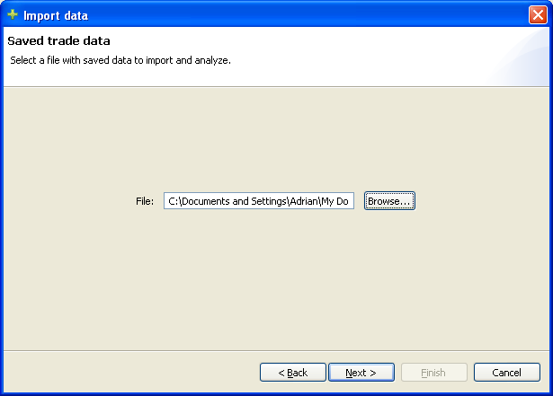
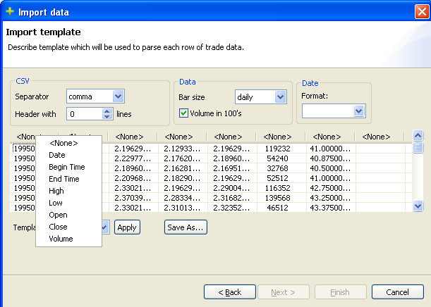
In the import template page, users use a table format to define
the structure of their file. Once they define a template, they may
save the template or use existing templates to save re-defining all
of the import fields.
Once a strategy has been defined with all of the desired
instruments, click the “Run Strategy” button which will
take you to the Backtest perspective.
Backtest Perspective
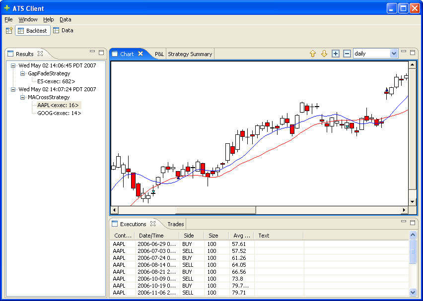
Users can display all of the data in a familiar candlestick style,
change the data timescale from 5min to daily. Each strategy defines
chart contributions (in this case, two EMAs) which will be added to
the chart. Executions show up as arrows, and selecting the execution
in the lower view will cause the chart to scroll directly to the
execution, with the selected execution highlighted. (This also works
with the trade view.)
In addition to the chart view, users can see the Profit and Loss
view which displays three chart: the running total profit and loss,
the per-trade profit and loss, and the running drawdown.
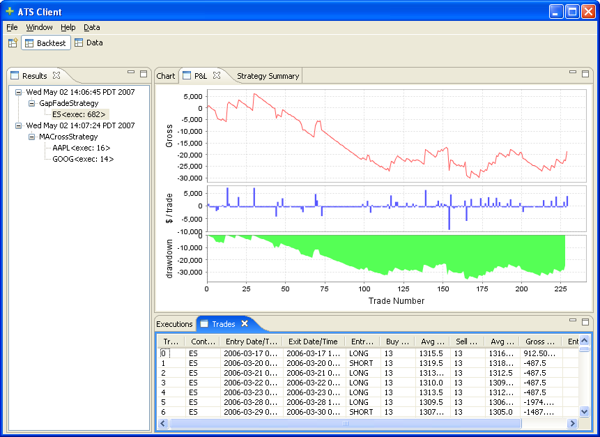
Finally, users can use the Strategy Summary view which breaks down
all of the statistics for the strategy run:
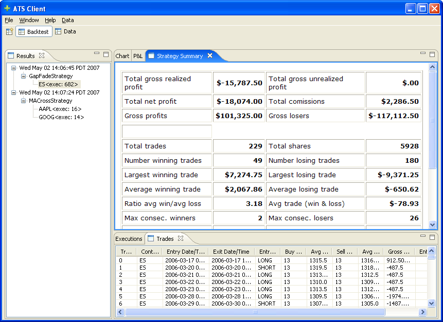
Preferences
To configure the preferences, run “Window > Preferences”
which give users the option of customizing their platform for their
machine:
Backtesting preferences:
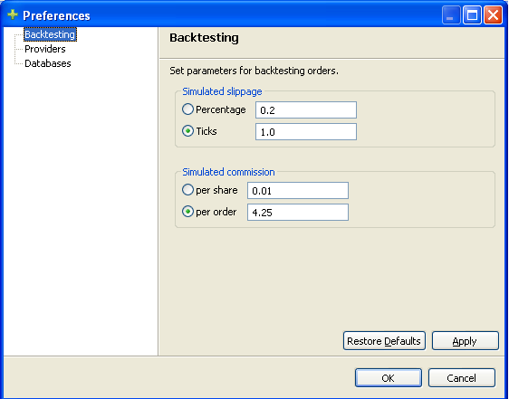
Provider preferences:
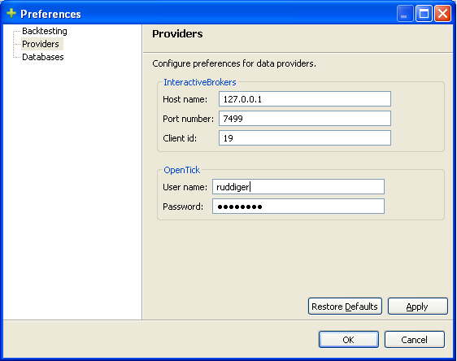
Database preferences:
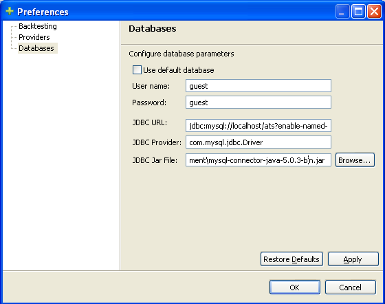
Runtime
In the runtime mode, the user is given relatively little control.
It is designed to present simple details for feedback on the
different strategies, but nothing else in order to keep memory usage
to a minimum. Currently, there is a tab for each strategy which
displays the current positions for the strategy, a tab which shows
all of the executions for that strategy, and a view at the bottom
displaying all messages. With the combo box to the right, users can
change the priority of messages, from DEBUG level through INFO and
ERROR, depending on the stage of development and confidence.
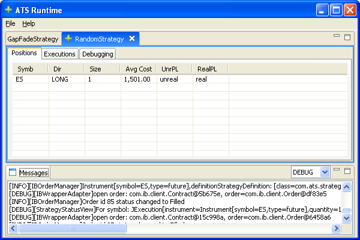